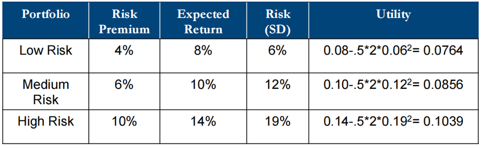
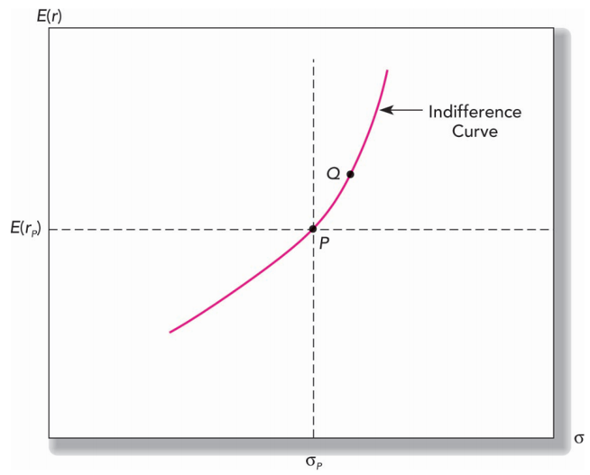
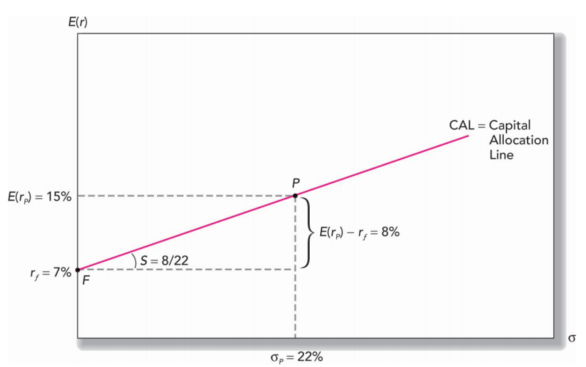
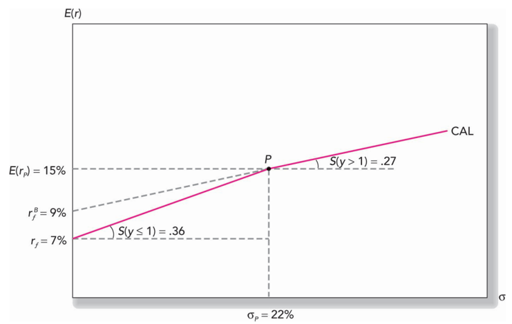
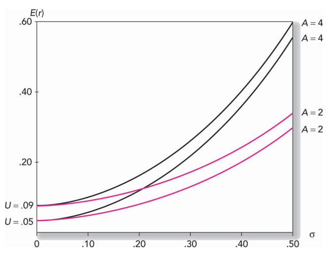

Lecture 2 Risk and Return
2.1 Learning Objectives
This lecture aims to provide the ability to:
- Compute various measures of return on multi-year investments.
- Determine the expected return and risk of portfolios combining risky assets and risk-free investments like Treasury bills.
- Use the Sharpe ratio for evaluating portfolio performance and guiding capital allocation.
- Understand the role of utility in determining optimal capital allocation to risky assets.
2.2 Measuring Returns
Returns can be measured in several ways:
- Holding Period Return (HPR): This is the return earned over the period an investment is held.
- Returns Over Multiple Periods: These can be compounded over time using methods such as:
- arithmetic average,
- geometric average (compound annual growth rate), and
- dollar-weighted average (internal rate of return).
2.2.1 Arithmetic Average
\[ \text{Arithmetic Average} = \frac{1}{N} \sum_{i=1}^{N} r_i \] where \(r_i\) is the return in period \(i\) and \(N\) is the total number of periods.
2.2.2 Geometric Average
\[ \text{Geometric Average} = \left( \prod_{i=1}^{N} (1 + r_i) \right)^{\frac{1}{N}} - 1 \]
where \(r_i\) is the return in period \(i\) and \(N\) is the total number of periods.
2.2.3 Dollar-Weighted Average (Internal Rate of Return)
The dollar-weighted average return, or internal rate of return (IRR), is the discount rate \(r\) that sets the net present value (NPV) = 0. It is calculated by solving the following equation:
\[ \text{Dollar-Weighted Average} = \sum_{t=0}^{N} \frac{C_t}{(1 + r)^t} = 0 \]
Where \(C_t\) is the net cash flow at time \(t\), and \(N\) is the total number of periods.
2.2.4 Annualizing Returns
- Annual Percentage Rate (APR): Simple annualized interest rate without compounding.
- Effective Annual Rate (EAR): Accounts for intra-year compounding, providing a true measure of annual return.
\[ \text{APR} = r \times n \]
Where:
- \(r\) is the periodic interest rate
- \(n\) is the number of compounding periods per year
\[ \text{EAR} = \left(1 + \frac{r}{n}\right)^n - 1 \] Where:
- \(r\) is the nominal annual interest rate
- \(n\) is the number of compounding periods per year
Example:
$ 10000 Deposit, APR (annual percentage rate): 4% p.a. Compounding Quarterly.
\[ \begin{aligned} EAR &= (1+r/n)^n− 1 \\ &=(1+(0.04)/4)^4 −1 \\ &=0.0406 \\ &= 4.06\% \end{aligned} \]
2.4 Portfolio Construction
Selection of risky assets/portfolios such as stocks and bonds.
Decision on the proportion of the portfolio to invest in risky assets versus risk-free assets.
2.4.1 Capital Allocation:
Combining investments in risk-free and risky assets allows for varying expected returns and risks.
We call the overall portfolio composed of the risk-free asset and the risky portfolio the complete portfolio.
2.4.2 Utility
Utility: Represents investor preferences, considering risk aversion. It helps in making decisions about different securities.This is a single measure we have the investor’s attitudes to risk and return at each level of wealth.
Influence of the trade-off decisions:
- Risk appetite (strong financial position and stable income may have higher appitite)
- proportion of the investor’s total wealth. (psychological risk aversion)
- Financial Goals/liquidity needs (set when they need cash flow)
- Investment Horizon (longer horizon takes more risk)
- Knowledge and Experience (Dunning Kruger effect)
- Social/Regulatory environment and incentives
2.4.3 Utility Function
Captures an investor’s risk-return trade-offs. Utility increases with expected return and decreases with risk. More risk-averse investors have higher coefficients of risk aversion (A).
There are countless utility functions. An example is:
\[ U = E(r) - \frac{1}{2} A \sigma^2 \] Where:
- \(U\) = the utility value,
- \(A\) = coefficient of risk aversion,
- \(\sigma^2\) = variance
- Utility increases with expected returns and decreases with risk.
- Utility of a risk-free portfolio is equal to its rate of return.
- More risk-averse investors will have larger values of A.
- Investors assign higher utility to more attractive risk-return portfolios.
Example:
where:
- \(A\) degree of risk aversion = \(2\)
- \(r_f\) risk-free rate = \(4\%\)

2.4.4 Indifference Curves
These curves connect portfolios providing the same utility level, illustrating an investor’s preference for different risk-return combinations.
Simply above the curve Yes, below the curve no.

2.4.5 Capital Allocation Line
It’s possible to split investment funds between safe and risky assets.
- Risk free asset: proxy = T-bills
- Risky asset: stock (or a portfolio)
- \(r_f\) Risk-free rate = \(7\%\)
- \(\sigma_{r_f}\) Standard deviation of the risk-free rate = \(0\)
- \(E(r_p)\) Expected return of the risky portfolio = \(15\%\)
- \(\sigma_p\) Standard deviation of the risky portfolio = \(22\%\)
The investor allocates \(y\) proportion of their wealth in the risky portfolio and \(1 - y\) in the risk-free portfolio.
\[ \begin{aligned} E(r_c) &= (y)E(r_p) + (1 - y)r_f \\ E(r_c) &= y \times 15\% + (1 - y) \times 7\% \\ E(r_c) &= 7\% + y \times (15\% - 7\%) \\ E(r_c) &= 7\% + 8y \\ and \\ \sigma_c &= y \sigma_𝑝=22𝑦\\ \end{aligned} \]
Example:
\[ \begin{aligned} y &= 0.75 \\ r_𝑐 &= 0.07+0.08*(0.75) = 13\% \\ \sigma_c &= y \sigma_𝑝=22𝑦\\ \sigma_c &= 16.5\% \\ \end{aligned} \] 
The Sharpe Ratio, which measures extra return per unit of risk (gradient of line), is calculated as:
\[ \begin{aligned} \text{Sharpe ratio} &= \frac{E(r_p) - r_f}{ \sigma_p}\\ &= 8/22 \\ &= 0.36\%. \end{aligned} \]
2.4.6 Capital Allocation Line (CAL) with Leverage
Leverage multiplies loss and return at a cost of borrowing money from dealers.
Borrowing at the risk-free rate extends the CAL. Borrowing rates higher than the risk-free rate cause a kink in the CAL, changing the slope.
\[ \begin{aligned} 𝐸(r_c) &= (−0.5)∗0.09+(1.5)∗0.15\\ &=18\% \\ \sigma_c &= (1.5)0.22 = 33\% \\ \text{The Sharpe ratio is} \\ (18−9)/0.33 &= 0.27\% \\ \end{aligned} \] 
2.4.7 Utility Maximization
In portfolio theory, investors aim to maximize their utility, which balances expected return and risk. Mathematically, the utility function is:
\[ \begin{aligned} \text{Max}(U) &= E(r) - \frac{1}{2} A \sigma^2 \\ &= r_f + y [E(r_p) - r_f] - \frac{1}{2} A y^2 \sigma_p^2 \\ \text{Solve for y, we have } \\ y^* &= \frac{E(r_p) - r_f}{A \sigma_p^2} \end{aligned} \]
To find the optimal proportion \(y^\) to invest in the risky portfolio, we solve for \(y_*\):
R code
# Define parameters
rf <- 0.06 # Risk-free rate
Erp <- 0.18 # Expected return of the risky portfolio
sigma_p <- 0.25 # Standard deviation of the risky portfolio
A <- 5 # Degree of risk aversion
# Calculate optimal y
y_star <- (Erp - rf) / (A * sigma_p^2)
y_star## [1] 0.384## [1] 0.10608## [1] 0.096## [1] 0.482.4.8 Personal preferences

- Investors aim to choose portfolios on higher indifference curves.
- Higher indifference curves provide a higher expected return for a given level of risk.
- More risk-averse investors have steeper indifference curves.
- More risk-averse investors require a greater increase in expected return for an increase in portfolio risk.
2.4.9 The Capital Market Line (CML)
| Aspect | Active Management | Passive Management |
|---|---|---|
| Pros | ||
| Higher Return Potential | Aims to outperform the market. | Matches market returns. |
| Flexibility | Can quickly adjust to market changes. | Follows index rules. |
| Risk Management | Can avoid certain sectors or stocks to manage risk. | Diversified holdings reduce specific risks. |
| Exploiting Inefficiencies | Can capitalize on market inefficiencies. | Benefits from overall market growth. |
| Customization | Tailors strategy to investor goals. | Simple, straightforward strategy. |
| Cons | ||
| Higher Costs | More fees and expenses due to frequent trading and research. | Lower fees and expenses. |
| Performance Uncertainty | No guarantee of outperforming the market. | Predictable performance, matches index. |
| Increased Risk | Higher risk from concentrated positions and market timing. | Lower risk due to diversification. |
| Tax Implications | More frequent trading can lead to higher taxes. | Less frequent trading, more tax efficient. |
| Dependence on Manager Skill | Relies on the skill and judgment of the manager. | No reliance on manager skill. |